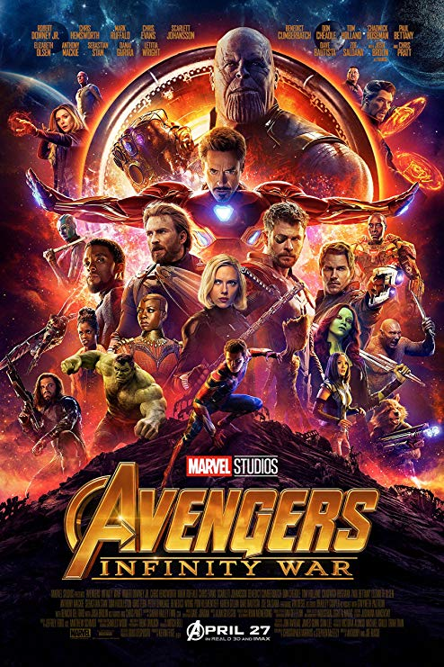
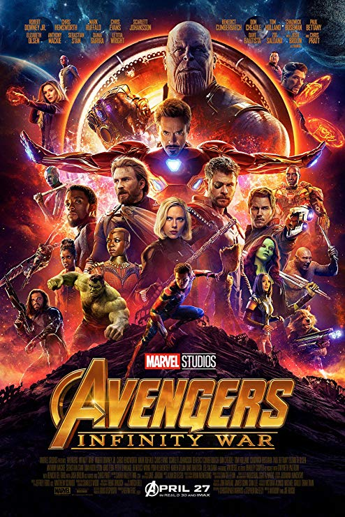

What are Iron Man's powers?
Iron Man possesses a wealth of powers through his powered armor suit. These powers include super strength,
the
ability to fly, durability, and a number of weapons. The primary weapons used by Iron Man are rays that are
shot
from the palms of his gauntlets.
Who is Iron Man's alter ego and how did he get his powers?
Iron Man gets his superpowers from his metallic suit of armor and other technologies invented by his alter
ego
Tony Stark. Tony is a genius engineer and wealthy owner of a technology company. Tony built the Iron Man
suit
when he was kidnapped and suffered an injury to his heart. The suit was meant to save his life and help him
escape.
Tony also has an improved artificial nervous system which gives him greater healing powers, super
perception,
and the ability to merge with his suit of armor. Outside of his armor he has been trained in hand-to-hand
combat.
Steve Rogers was born during the Depression and grew up a frail youth in a poor family. His father died when
he
was a child, his mother when he was in his late teens. Horrified by newsreel footage of the Nazis in Europe,
Rogers was inspired to try to enlist in the Army. However, because of his frailty and sickness, he was
rejected.
Overhearing the boy's earnest plea to be accepted, General Chester Phillips of the U.S. Army offered Rogers
the
opportunity to take part in a special experiment called Operation: Rebirth. Rogers agreed and was taken to a
secret laboratory in Washington, D.C. where he was introduced to Dr. Abrahan Erskine (code named: Prof.
Reinstein), the creator to the Super-Soldier formula.
After weeks of tests, Rogers was at last administered the Super-Soldier serum. Given part of the compound
intravenously and another part orally, Rogers was then bombarded by "vita-rays," a special combination of
exotic
(in 1941) wavelengths of radiation designed to accelerate and stabilize the serum's effect on his body.
Steve
Rogers emerged from the vita-ray chamber with a body as perfect as a body can be and still be human. A Nazi
spy
who observed the experiment murdered Dr. Erskine mere minutes after its conclusion. Erskine died without
fully
committing the Super-Soldier formula to paper, leaving Steve Rogers the Sole beneficiary of his genius.
Robert Bruce Banner was the son of Dr. Brian Banner, an atomic scientist, and his wife Rebecca. Although
Rebecca
deeply loved Bruce, who returned her affection, Brian hated the child. Possibly an alcoholic, Brian Banner
was
driven by an insane jealousy of Bruce for being an object of Rebecca's love. Brian Banner finally murdered
Rebecca and was placed in a mental hospital. Bruce, a highly withdrawn, intellectual youth, was raised by
his
aunt, Mrs. Drake, and internalized his great pain and rage over his childhood sufferings.
Eventually, as an adult and a genius in nuclear physics, Banner went to work at a United States Defense
Department nuclear research facility at Desert Base, New Mexico. There Banner met General Thaddeus E.
"Thunderbolt" Ross, the Air Force officer in command of the base, and his daughter Betty. Banner and Betty
Ross
eventually fell in love with each other. Banner designed and oversaw construction of the "gamma bomb" or
"G-bomb," a nuclear weapon that had a high gamma radiation output.
Descended from Norse gods, Thor nearly started a war by violating a truce with his family's ancient enemy
--the
Frost Giants. Odin, his father, banished the young god of thunder to Earth without his memory, to teach Thor
how
to behave as a mere mortal. After a decade as an earthly doctor, Donald Blake was drawn to Norway, and a
subsequent encounter with a race of warmongering aliens. While hiding out in a cave, Blake found a
mysterious
wooden cane that turned out to be the enchanted hammer Mjolnir -- which transformed him back into the mighty
Thor. He drove off the alien invaders and took his place with the Avengers. Shaking off the Blake persona,
Thor
was soon forced to assume the human identity of EMS technician Jake Olsen. Thor is forever torn between his
divine home -- the hallowed halls of Asgard -- and the troubled lands of his adopted home, Earth.

 
